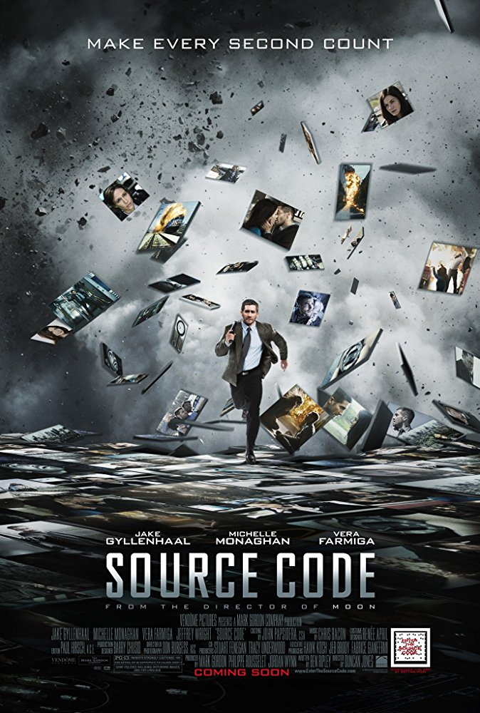
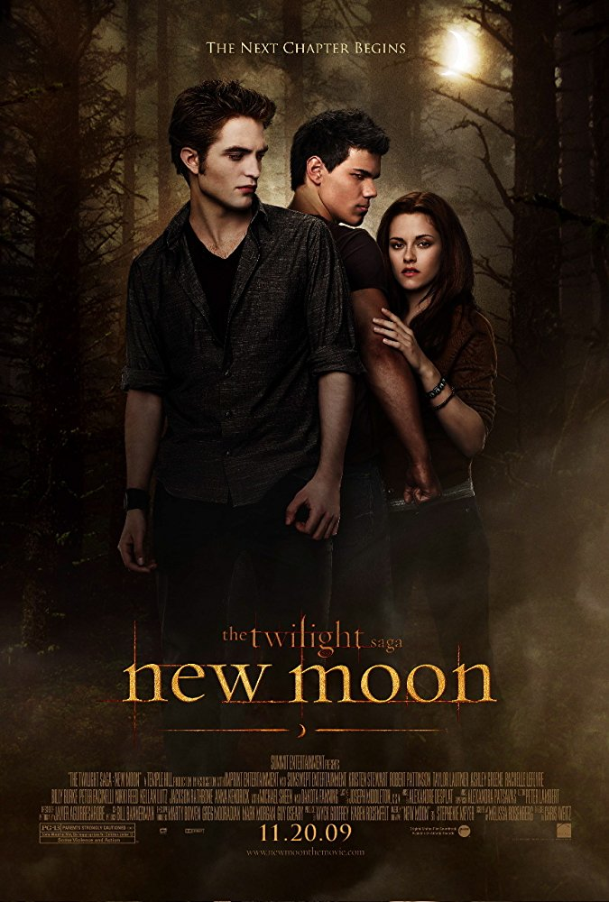
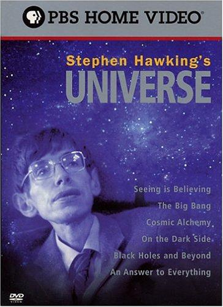

Genre: Fantasy, drama, young adult fiction, mystery, thriller
Release Date: 2002
Description: Harry ignores warnings not to return to Hogwarts, only to find the school plagued by a series of mysterious attacks and a strange voice haunting him.
Genre: Mystery, Romance, Thriller
Release Date: April 1, 2011
Description: A soldier wakes up in someone else's body and discovers he's part of an experimental government program to find the bomber of a commuter train. A mission he has only 8 minutes to complete.

Genre: Fantasy, Romance
Release Date: 2009
Description: Edward leaves Bella after an attack that nearly claimed her life, and in her depression she falls into yet another paranormal relationship - this time with werewolf Jacob Black..

Genre: Astronomical Documentary
Release Date: 1997
Description: 6-part documentary series from arguably the greatest scientific mind in the world, the wheelchair-bound Stephen Hawking, which describes all current thinking on the Big Bang, origins of the universe, dark matter, black holes, etc. Includes interviews with leading astronomers and scientists, some commentary from the great man himself, and computer models of the theories.
